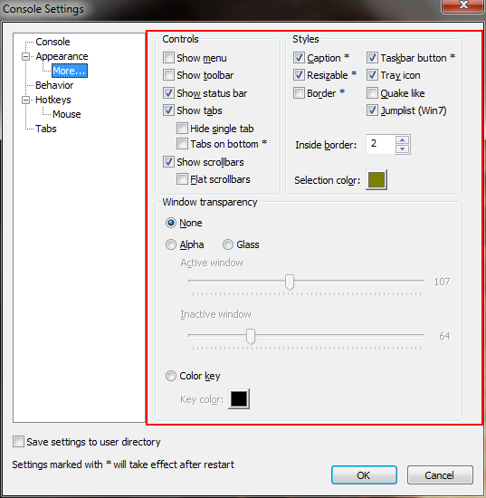

Show menu
Shows/hides main menu.
Show toolbar
Shows/hides toolbar.
Show status bar
Shows/hides status bar.
Show tabs
Shows/hides tabs bar.
Hide single tab
If checked, tabs bar will be hidden if there's only one tab active.
Caption
If checked, main window will have a title bar.
Resizable
If checked, main window will be resizable.
Border
If checked, main window will have a border.
Taskbar button
If checked, Console's taskbar button will be visible.
Tray icon
If checked, Console will show an icon in the tray bar.
Inside border
Specifies Console's inside (client area) border.
None
Alpha
Color key
Specifies transparency type.
Alpha transparency is the 'real' transparency.
Color key transparency allows you to specify a single color that will
be made transparent. All window pixels having this color will be
transparent and mouse clicks will pass through transparent areas.
Active window
Specifies alpha transparency for while Console window is active.
Inactive window
Specifies alpha transparency for while Console window is not active.
Key color
Specifies transparency color for 'color key' transparency.